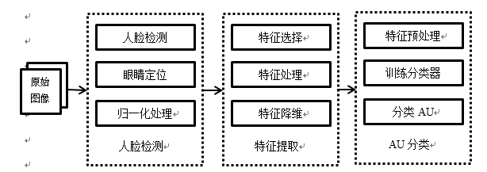
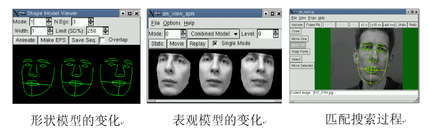

AU
AU是一种描述面部运动状态的机制，是Ekman和Friesen[1]首先提出来的。他们在实验中观察人类面部表情的产生和面部肌肉运动的关系，发现肌肉的运动是产生各种不同表情的关键因素。于是，Ekman和Friesen将不同的肌肉运动状态记作不同的AU，然后通过AU或者AU组合分解表情。 FACS是由美国心理学家Ekman和Friesen在研究了脸部肌肉运动和人类面部表情控制之间的关系后所提出来的。Ekman和Friesen通过研究比较人类的各种表情动作，发现几乎所有的表情都与面部肌肉的收缩运动有关系。根据这一特点, 二人将人脸划分成大约46个AU,每个AU表示一个独立的面部肌肉运动状态。 2002年，Ekman等人又给出了FACS的一个新版本FACS+。FACS+共包含55个AU。其中41个描述表情变化的肌肉运动，剩余的14个描述头部和眼睛的运动。新的FACS对AU的描述更加符合人类视觉对面部动作的感知规则，是目前已知的最好的描述面部运动的编码系统。 

AU识别的主要步骤： 
人脸检测
人脸检测就是要在给定的图像中检测到人脸所在的区域，并将该区域提取出来，处理成统一的格式的过程。人脸检测技术是进行许多人工智能问题研究的前提条件和关键环节，一个完善的人脸检测系统要求能够适应各种复杂条件下的图像，能够处理遮挡，角度，清晰度变化等带来的影响。 基于统计的方法是目前应用较多，发展迅速的一类方法。LDA，PCA，ICA，SVM等都是基于统计的方法。基于统计的方法的优点是对各种条件的变化有比较高的鲁棒性，但是这些算法通常比较复杂。 ## 特征提取 肌肉运动可以从不同的角度表示，这就产生了不同的特征提取方法。一种角度是从静态来看，肌肉的某种运动状态必然对应一种特征。另外一种是从动态来看，肌肉的运动方向和位置也能标识出AU ### 基于几何特征的方法 基于几何特征的特征提取方法主要包含2个关键问题：一是如何选择特征点以及提取什么样的特征，二是如何准确有效的定位跟踪特征点。 一般情况下，特征点应该选择有明显形变或与其他部位易于区分的部位，如嘴巴、眉毛、眼睛、鼻子的边缘点。实验表明，这些关键点信息含量高，易于提取，受光照、头部运动等影响较小，能够取得较好的识别效果。 特征点的精确定位和动态跟踪十分重要，对后续的识别影响很大。现有的定位方法主要有基于先验规则的方法，Snake，ASM，AAM等。 AAM改进了ASM算法，加入的纹理特征。AAM是包含了图像的形状信息和纹理信息的统计模型，具有强大的建模能力，近年来被广泛应用于图像分析。 后来，许多专家学者改进了AAM算法，使它的应用范围更加广泛。例如，Gallou和Guier使用像素的角度信息替代原本的灰度信息，得到对光照和姿态变化有很好鲁棒性的新算法
基于外貌特征的方法
基于外貌特征的提取算法通过获取像素之间的梯度、纹理和相关性等信息作为AU识别的依据。常用的基于外貌特征的方法有很多，KPCA、PCA、ICA、LFA、FLD、LBP、Harr、Garor等都是基于外貌特征的特征提取算法。该类算法通常受光照、肤色、图像质量的影响较大，首先需要进行灰度归一化等处理。归一化处理主要的目的是消除这些变化对算法的影响。 Bazzo提出一种在差分图像上提取Garbor特征的新算法，实现了对不同种族，包含微小头部运动的人脸图像的较高的AU识别率
基于混合特征的方法
不同的特征提取方法都有各自的优势和劣势，所以很自然的研究人员就想到将不同的特征提取算法结合起来，发挥优势，减少劣势，于是出现了各种各样的混合特征的提取算法。 外貌特征反映人脸像素信息，信息详细丰富，但是受姿态、光照、遮挡等影响较大；几何特征反映人脸形变信息，信息量较小，但不容易受影响。将二者结合，也能提高识别效果。在混合使用特征方面。
主动外观模型
am_tools 工具箱
Am_tools是由Tim Cootes开发的特征提取工具箱[57]。它实现了常用的特征提取算法，并提供命令行工具和API供其他研究者使用。利用该工具箱可以方便的实现建立表观模型(am_build_apm)，建立主动外观模型（am_build_aam）,产生和编辑三角剖分（am_tri_editor）,利用模型产生图像(am_make_image)。am_tools实现了所有AAM算法中用到的算法，并提供了友好的交互方式控制各个参数，分析比较实验结果 Am_tools工具包含四个主要的文件夹，images,points,models,win_bin.其中image是存放图像数据的，points是存放图像上的特征点的数据的，models存放的描述模型的数据文件，以上这三个文件夹构成AAM算法的实验材料。Win_bin里面存放的是各种算法工具，这些算法都是编辑好并经过优化的。下面几张图列举了使用am_tools观察的几个算法处理过程。 
贝叶斯网络
贝叶斯网是一种基于概率论的图结构。概率的贝叶斯解释认为概率是事件发生的合理信度，可以根据相关的经验给出一个事件的先验概率，这样就可以将已有的经验带入推理当中，提高推理的准确性。
贝叶斯推理
联合概率的推理问题是一个及其复杂的问题，因为其困难度会随着变量的个数指数级增长。贝叶斯网络是联合概率的分解表示，它在一定程度上简化了推理算法，降低了推理过程中算法的复杂度。
BNT工具箱
BNT其实是一个贝叶斯网相关算法的实现集合。BNT中实现了大部分相关算法，非常适合基于MATLAB的编程者引用。使用它，能够大大提高编程效率。
表情数据库
JAFFE数据库
该数据库是在基本表情识别中最常见的数据库。包含的6种基本表情和中性表情。  ### Yale Face 数据库 该数据库共包含165幅图像，它是面部图像种类最齐全的数据库。 ### MMI表情库 MMI表情数据库是记录面部行为最为全面的数据库，包括19-62岁之间的50个人的正面和侧面人脸图像。
### Yale Face 数据库 该数据库共包含165幅图像，它是面部图像种类最齐全的数据库。 ### MMI表情库 MMI表情数据库是记录面部行为最为全面的数据库，包括19-62岁之间的50个人的正面和侧面人脸图像。  ### AAI表情库 AAI表情数据库记录的全部都是自发表情，该数据库记录了60个成年人对童年经历描述时产生的自发表情，每个人持续30-60分钟。 ### CK表情库 CK表情数据库是在AU识别领域使用最为广泛的数据库，目前为止一共有三个版本
### AAI表情库 AAI表情数据库记录的全部都是自发表情，该数据库记录了60个成年人对童年经历描述时产生的自发表情，每个人持续30-60分钟。 ### CK表情库 CK表情数据库是在AU识别领域使用最为广泛的数据库，目前为止一共有三个版本